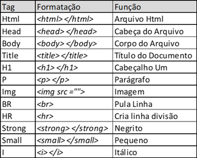
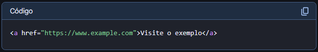

HTML (HyperText Markup Language) é a linguagem de marcação fundamental para a criação de páginas web. Define a estrutura e o significado do conteúdo da página, permitindo a organização e apresentação de texto, imagens, vídeos, entre outros elementos. Em outras palavras, HTML é o esqueleto de uma página web.
A estrutura básica de um documento HTML é composta por três elementos principais: html, head e body. A tag html compõe todo o arquivo HTML, inclusive todas as outras tags e é essencial para criação de um arquivo em HTML. A tag (head) contém informações sobre o documento como o título da página, enquanto a tag (body) contém o conteúdo visível da página, como textos, imagens e links. Dentro da tag (head), é necessário colocar a tag (title) que define o título da página web.
As tags HTML são como as etiquetas que marcam o início e o fim de um elemento dentro de uma página web. Elas indicam ao navegador como o conteúdo deve ser exibido, como títulos, parágrafos, imagens, links, etc. Existem tags que precisam ser abertas e fechadas, como a tag (p) para parágrafo em que é utilizado o símbolo de menor (<) seguido do (p) e com símbolo de maior (>), escreve o texto e depois fecha com (<) barra (/) e finaliza com (p) e (>) no final. Além disso existem tags que não precisam ser abertas e fechadas, como a tag (br) de pular linha na qual só precisa digitar o símbolo de menor (<) seguido do br e termina com símbolo de maior (>). Veja alguns exemplos das principais tags utilizadas em um arquivo HTML:
Além disso, existem as atribuições das tags que são informações adicionais nas quais fornecem contexto e funcionalidades a um elemento HTML. São pares de nome/valor que aparecem dentro da tag de abertura e influenciam a sua apresentação ou comportamento. Por exemplo a tag (img) onde contém src que diz a fonte da imagem deve-se colocar entre aspas o link da imagem ou nomedaimagem.extensão, logo isso é um atributo da tag. Entretanto, esse atributo é obrigatório na tag imagem, mas existem atributos que são opcionais como dar um tamanho a imagem como atributo width ="100". Nesse caso, o atributo width está definindo a largura da imagem em 100 pixels. Obs: Se você estiver tentando colocar uma imagem direto do seu computador, certifique-se que ela esteja no mesmo diretório do seu arquivo HTML.
As listas ordenadas são uma forma de organização de listas em ordem numérica em que é utilizado a tag (<)ol(>) (<)(/)ol(>) para criação da lista e em cada tópico é usado a tag (<)li(>) (<)(/)li(>). Já as listas não ordenadas são organizadas em tópicos, como por exemplo o índice dessa página web. A única diferença em sintaxe é que na lista não ordenada é utilizado a tag (<)ul(>) (<)(/)ul(>) em vez da tag ol. Veja a diferença:


Os links são elementos que permitem aos usuários navegarem entre diferentes páginas ou recursos de uma página da web. Eles são essenciais para a estrutura e navegação de qualquer site. os links são criados com a tag (a), que significa "âncora". A tag (a) define um hiperlink, que é uma ligação entre uma página web e outra, ou mesmo dentro da mesma página. Essa tag vem acompanhada do atributo href="endereço(URL)". Veja sua formatação:
